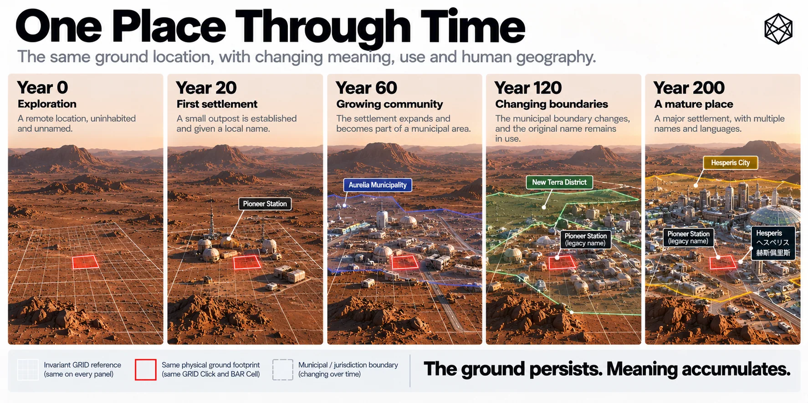

Names, Borders and Memory
The Human Geography Above Matlas
A new settlement begins with coordinates.
Quite soon, it acquires nicknames.
The official plan may be immaculate. Habitats have numbers, airlocks have identifiers, corridors have engineering designations, and GRID and BAR sit underneath with all the precision we have spent most of this book constructing. Then somebody calls an awkward bend in a tunnel something rude, a maintenance junction acquires the name of the person who once spent an appalling night repairing it, and a café lends its name to the square outside.
That is when geography starts becoming human.
Matlas can identify the ground before any of this happens. It can keep that location stable for as long as the specification survives. What it cannot do is supply the meaning that will eventually accumulate there.
Names arrive before anyone plans them
Informal naming will probably begin almost immediately because people are good at shortening official language and even better at ignoring it.
“HAB-03 EAST SERVICE CONNECTION” becomes “East Lock”. A steep route beside an escarpment becomes “the Steps” despite containing no steps. A remote power junction becomes “Maya’s Corner” because Maya once spent nineteen miserable hours repairing it during a storm. None of these names needs permission in order to become useful.
People name places because they need to distinguish them, remember them, complain about them or tell stories about them. The best names often arrive before anybody realises a naming decision has been made.
Over time, some will become official. Others will remain unofficial while appearing on every map that anyone actually uses. A contractor’s name may survive on a district long after the company has vanished. A temporary construction label may outlive the structures that produced it. The origin may remain obvious, or disappear while the name carries on.
That is one of the peculiar strengths of place names: they can preserve history after people have forgotten the story.
Names also leave marks on the physical map. A road may bend around a structure demolished decades earlier. A square may exist because two temporary construction corridors happened to meet. A neighbourhood boundary may follow the footprint of an early pressure zone whose engineering purpose disappeared before most current residents were born. The city becomes partly autobiographical: decisions made for immediate practical reasons survive as shape, then acquire stories, then become simply how the place is.
That helps explain why mature human geography is usually messier than technical geography.
It remembers.
GRID stays clean because memory is not its job. Streets, districts and local names are free to collect the residue of what actually happened.
Consider a temporary cluster of early habitats nicknamed Tin Town. Planners dislike it and propose something more dignified. Nobody uses the replacement. Twenty years later the temporary modules are gone but the district is still Tin Town. Fifty years later residents are proud of the name. A century later somebody writes an academic paper arguing that the popular account of its origin is almost certainly wrong.
Nothing about that process requires the underlying spatial identity to change.
The district can grow across GRID boundaries. The nickname can become official. A later administration can rename it again. The ground remains referable throughout.
One place can carry several names
Official naming will still matter. Settlements will need street signs, transport maps, emergency records and public facilities with names that institutions agree to use. Scientific organisations will continue using recognised planetary nomenclature where it applies. Local authorities, companies and communities will all attach labels to the places they manage or inhabit.
The point is not to keep naming informal. It is to prevent official naming from becoming the only geography that counts.
Official and lived names often separate. A map can be updated in an afternoon. Speech is less obedient. Residents may continue using an old name for decades, particularly when the replacement feels imposed, clumsy or simply less useful.
A mature place may therefore have an official name, a local nickname, a historical name, a facility code and names in more than one language. An emergency service may prefer one form; residents another. An archive may preserve something nobody says any more. A visitor may use a map label that locals find faintly ridiculous.
All can refer to the same place.
Canonical spatial identity benefits from uniqueness because machines need one reproducible answer. Human naming does not. Human language survives very comfortably with ambiguity, redundancy and context.
There are many places on Earth with the same name because people do not normally name settlements for the convenience of global databases. Mars should be allowed the same freedom. If three settlements eventually contain a Central Station, civilisation will probably cope. Local context resolves most cases; software can add settlement context when it does not; the underlying address resolves the physical destination.
This is precisely why a technical identity is useful.
It allows ordinary language to remain ordinary.
Names will also change unevenly. An official authority may rename a street while residents continue using the old form. Different linguistic communities may use different names for the same district. One name may survive in speech while another appears on signs.
Matlas does not need to settle those disputes. It only needs to keep the references attached to the same ground.
Language adds another layer without requiring a separate theory. Pronunciations drift, spellings shorten, loanwords arrive and multilingual settlements develop parallel names. The form used by one generation may sound old-fashioned to the next while still remaining perfectly recognisable in an archive.
That is enough reason to keep canonical machine identity outside cultural vocabulary: the words can evolve without dragging the physical address with them.
A coordinate protocol is a poor place to conduct a naming war.
Some names will arrive for harder reasons. An accident, fire, decompression, rescue or other disaster can alter the meaning of a location almost overnight. Yesterday it was an equipment yard. Tomorrow it may be a memorial site whose name carries an event for generations.
The coordinates may be unchanged.
The BAR Cell may be unchanged.
The place is not.
And most meaning will accumulate in less dramatic ways: the route children walk to school, the bench where friends meet, the first building a family occupied, the corner everybody uses as a landmark, the ridge whose view eventually becomes so familiar that nobody thinks to photograph it.
A technically perfect map can record all of those locations.
It cannot decide which ones matter.
Borders move too
Names are not the only layer that changes.
Borders will arrive as settlement becomes institutional. Some may begin as service areas or municipal districts. Later there may be larger jurisdictions whose form nobody designing an early technical geography can sensibly predict.
Some boundaries may follow GRID because convenient existing lines are attractive. Others will follow resources, transport, terrain, settlement history or political compromise and cut across GRID however they need to.
That presents no particular difficulty for the reference system.
A city can expand across several Provinces. Two settlements can merge. A municipality can be divided. A regional authority can disappear. The technical identity of the ground underneath need not be rewritten each time.
This becomes especially useful with age. A scientific station might spend its first fifty years in one jurisdiction and its next fifty in another. Its maintenance records can still refer to the same GRID and BAR locations while the political metadata changes around them.
The old border remains historically reconstructable without remaining politically alive.
Political lines also leave cultural traces. A former municipal boundary may continue separating neighbourhood identities long after it has lost legal force. Residents may still talk about Old East and West Settlement generations after the administrative distinction disappeared.
Several maps can therefore be true at once.
The same place can accumulate several different kinds of boundary over time. One may be legal, another operational, another historical and another purely cultural. They need not coincide, and forcing them to do so would erase information rather than simplify it. A former settlement edge can remain meaningful to residents after annexation; an emergency-service boundary can move next year without altering either the neighbourhood or the GRID beneath it.
This is the sort of layered messiness that makes a place feel old.
The technical map becomes more useful by refusing to demand that every other map look like it.
Human regions can be fuzzy
Technical geography needs exact boundaries because software eventually has to decide which unit owns a point.
Cultural geography often does not.
Where does a neighbourhood end? At which corridor does the old industrial district become the newer residential quarter? How far does one settlement’s cultural influence extend? Where is the edge of a place that locals recognise instantly but draw differently when asked?
Sometimes there is no single correct line.
The uncertainty is not poor surveying. It is a property of what is being mapped.
Human regions emerge from habit, architecture, language, reputation, history and shared experience. Those things rarely stop on an exact meridian.
A cultural region can therefore cross GRID units, overlap another region or have a boundary best drawn as a fuzzy band rather than a line. A historian may choose one extent while a sociologist chooses another, and residents may disagree with both.
Matlas should not force that geography into false precision merely because its own units are exact.
The fixed layer can sit underneath.
An event can be anchored to a particular Cell while the remembered place extends more broadly. A district can have an approximate cultural edge while the buildings within it retain exact addresses. A historical border can be reconstructed precisely where evidence allows and uncertain where evidence does not.
Spatial precision is useful.
Social precision should not be invented.
Memory needs an anchor
This is where persistence becomes more than an engineering preference.
Earlier chapters treated it technically: freeze the civil reference realisation, define boundary ownership, version geometric changes, and do not allow a software update to wake an address up somewhere else.
After a century or two of settlement, the human reason becomes clearer.
History needs somewhere stable to happen.
Imagine one patch of Mars over two hundred years. At first it is a construction site described mainly by technical identifiers. Then it lies inside a named settlement. A neighbourhood grows around it. A road is renamed. An administrative border moves. A building is demolished and another replaces it. An accident produces a memorial nearby. Two settlements merge. A second language becomes common and supplies another everyday name.
GRID and BAR preserve none of those stories.
They preserve a stable place to attach them.
That changes what later records can do. A future map can show what the area was called fifty years earlier, where the old jurisdiction ran, which infrastructure predates the merger or where a historic event occurred even after every contemporary label has changed.

Read a description of this illustration
A reference unit can retain its geographic meaning while its landscape, settlement patterns, infrastructure or assigned cultural names change. Version changes are required if its membership geometry changes.
The meaning comes from records, photographs, testimony, maps and people.
The spatial reference simply stops the ground moving underneath them.
Stable reference also lets different generations describe change without pretending the old geography never existed. A planning map can show today’s city while an archive overlays the original construction perimeter. A school project can reconstruct the first settlement boundary. An investigation can compare incidents before and after an administrative reorganisation.
None of those tasks requires the old border or old name to remain current.
It only requires the old record to remain locatable.
This is the quiet difference between preserving a place and preserving every label ever attached to it. Matlas attempts the first. History can take care of the second.
The technical layer therefore becomes something like an archive framework without trying to become the archive itself.
Its cultural thinness becomes an advantage.
GRID names should eventually seem generic beside the geography above them. BAR identities should feel mechanical. Triplet remains an address interface rather than a source of civic poetry.
The interesting vocabulary ought to belong to Mars.
The grammar and the places
There is a limit to what can be designed before people arrive.
We can define a Quad. We can define how a Click nests inside a Tile and how BAR subdivides that Click. We can define the machinery that allows a location to remain referable while the systems around it change.
Those things are grammar.
What we cannot know is which joke will become a district, which ordinary café will lend its name to a neighbourhood, which accident will change the meaning of a site, which former border will remain culturally important or which unofficial name will survive several official attempts to replace it.
We cannot know which places children born on Mars will regard as beautiful, embarrassing, sacred, fashionable, dangerous or beloved.
Those things have to happen before they can become geography.
That is why the cultural incompleteness of Matlas is deliberate. A technical system designed before settlement should not arrive with the richest map of Martian meaning already filled in. If it did, we would have mistaken infrastructure for civilisation.
The restraint is part of the architecture.
We can help by providing the grammar. Martians will have to name the places.
That line is not a disclaimer about something Matlas failed to provide.
It is the division of labour the whole system was built to protect.
Matlas can keep a place referable while names change, borders move and memories accumulate. It can give history a stable patch of ground without pretending to know the history in advance.
The technical map can remain exact.
Everything that makes the map worth caring about has to be lived.